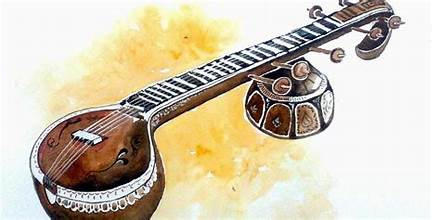

Carnatic music, a classical music tradition of South India, boasts a rich and ancient history that spans over centuries. Its roots can be traced back to the Vedas, the ancient sacred texts of India, where the concept of Nada Brahman or the divine sound emerged. The foundational principles of Carnatic music were further developed and codified by renowned musicologists and composers like Purandara Dasa, who is often hailed as the "Father of Carnatic Music."
The Trinity of Carnatic music—Tyagaraja, Muthuswami Dikshitar, and Syama Sastri—played a pivotal role in shaping and formalizing its structure during the 18th century. Over time, Carnatic music evolved, embracing diverse influences and regional styles while maintaining its core principles of melody (raga), rhythm (tala), and emotion (bhava). Today, Carnatic music stands as a testament to India's cultural heritage, captivating audiences with its intricate compositions, soul-stirring melodies, and profound spiritual significance.
Carnatic music in South India has strong ties to religion, making it a spiritual and cultural experience. The songs often praise gods and goddesses, telling stories from mythology and expressing deep devotion. Famous composers like Tyagaraja and Muthuswami Dikshitar created songs, or "kritis", that celebrate divine qualities and explore spiritual ideas. These compositions use languages like Sanskrit and Tamil and are filled with beautiful words and clever expressions. The themes vary from praising gods like Rama and Krishna to discussing the journey towards spiritual understanding. The spiritual side of Carnatic music adds depth, allowing both performers and listeners to feel a strong connection to the divine.